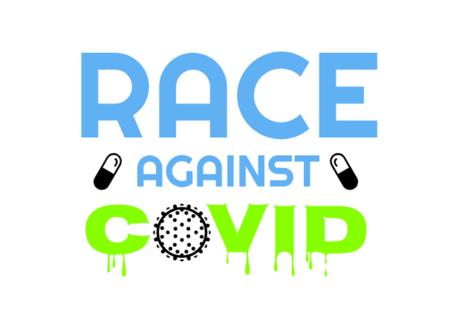
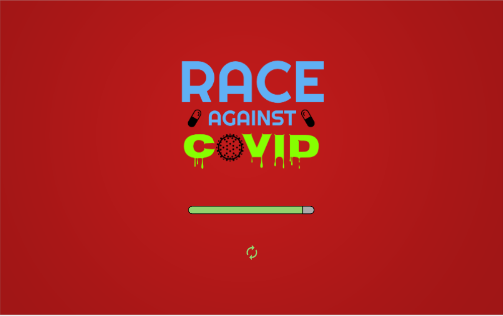
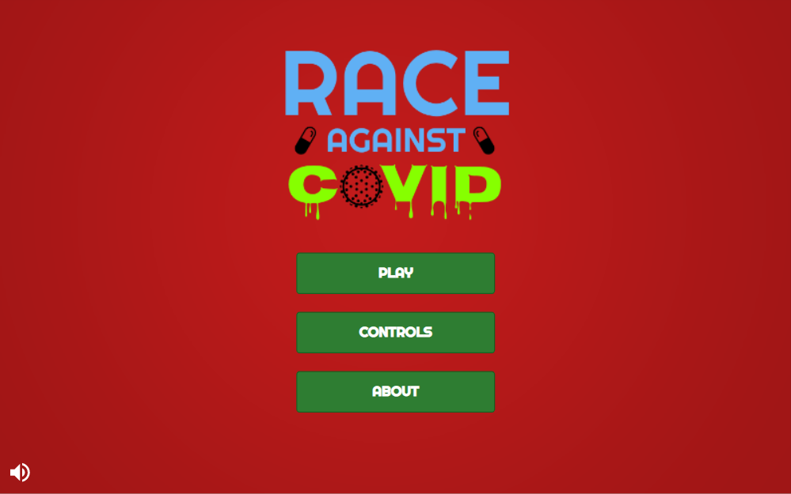
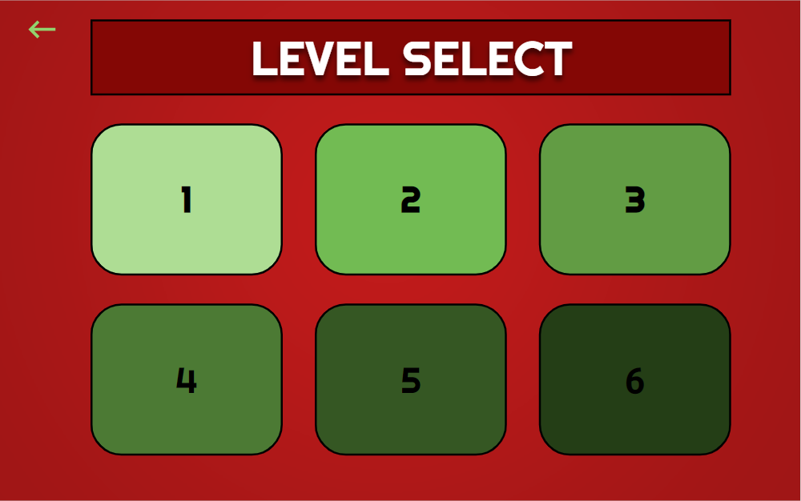
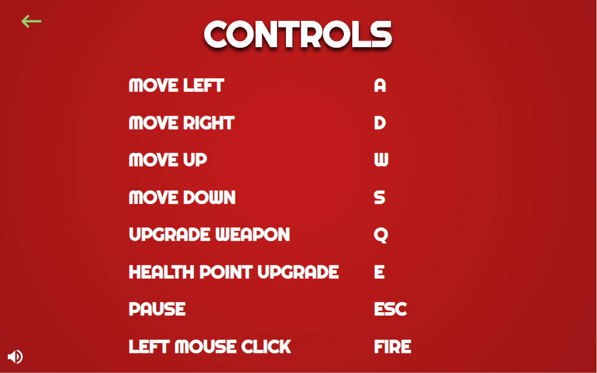
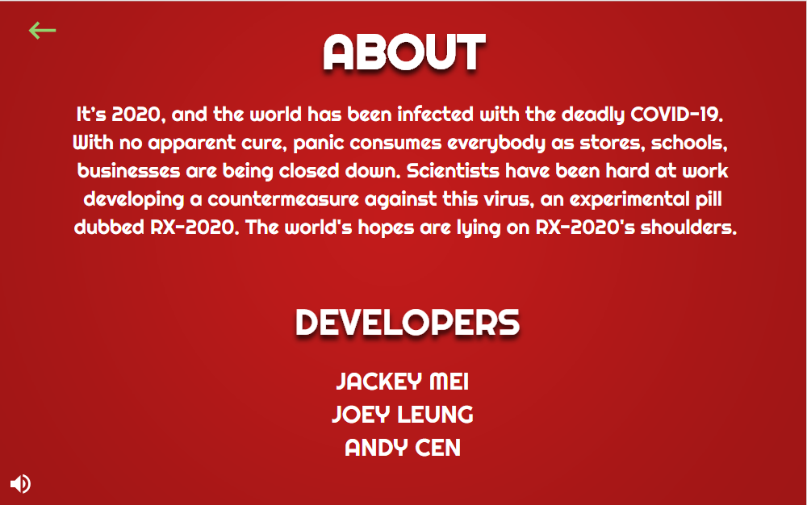
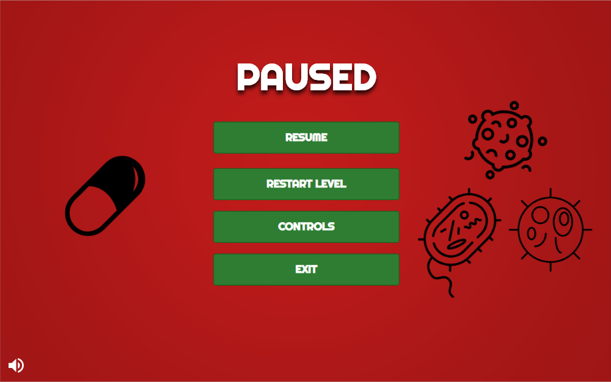

Game Design Document
by Jackey Mei, Joey Leung, Andy Cen
Introduction
This document describes a game called “Race Against COVID”, which is designed to be a top-down roguelike dungeon-crawler.
This game helps raise awareness for the ever-increasing dangers caused by the novel coronavirus in an entertaining form factor.
This game utilizes sprite-based animation, tiled backgrounds, collision detection, physics, AI, efficient memory management,
render threading, original audio and artwork, and other 2D game techniques.
Technology
“Race Against COVID” will be made using Phaser 3, a 2D game framework for developing HTML5 games on desktop.
It utilizes WebGL as its underlying rendering system. Music and audio effects are handled through Phaser.
Sprite design and animations are created through Aesprite.
Back Story
It’s 2020, and the world has been infected with the deadly COVID-19. With no apparent cure, panic consumes everybody as stores,
schools, businesses are being closed down due to this virus. Scientists have been hard at work developing a countermeasure
against this virus, an experimental pill dubbed RX-2020. The world’s hopes are lying on RX-2020’s shoulders.
Objective
RX-2020’s goal is to navigate through the human body to arrive at the stomach. It is equipped with a medi-gun that
shoots out medication to destroy the viruses on his way to the stomach. As the body of the person who took RX-2020 is
deteriorating fast, RX-2020 only has a short amount of time to make it to their stomach.
If RX-2020 doesn’t make it in time, the body will succumb to the virus. On its way to the stomach, RX-2020 has to be
careful not to expend too much of its life force on clearing the path to the stomach, or else it won’t be effective enough
to save the patient.
Gameplay
The style of the game will be a mix of a top-down dungeon crawler and bullet hell. The main goal of is to get RX-2020 to
the stomach in time to save the patient. Along the way, RX-2020 will encounter the coronavirus, which must be cleared
from every room RX-2020 arrives in before it can continue on its way to the stomach.
- RX-2020 will be able to shoot “medicine”, at the expense of its own life force,
using that to purge the viruses that stand between itself and the stomach.
- Every section of the body RX-2020 gets into must be cleared before it can continue on its journey to the stomach.
- If RX-2020 takes too long (timer runs out) the patient will die, and the level will fail.
- RX-2020 will encounter a variety of coronavirus types. These types will include basic viruses, viruses that can divide,
viruses that can attack from afar, quicker viruses, and viruses that can slow it.
- The more enemies RX-2020 kills, the more ‘points’ it will gain, allowing it to spend
it on upgrades to help it become more effective in curing the patients.
- RX-2020 will be able to find vitamin C supplements throughout the body to bolster its
‘health’ (heal itself) and effectiveness.
Controls
- W - Move Up
- A - Move Left
- S - Move Down
- D - Move Right
- Q - Upgrade Weapon
- E - Increase Health Points
- MOUSE - Aim
- LEFT-MOUSE-CLICK - Attack/Weapon Fire
- ESC - Pause Game
Graphic User Interface
- Splash Screen - This screen will display the game’s logo, a relevant background, and a loading bar
to the main menu.

- Main Menu - This screen will show options for the player to go to a level selection screen, a
controls screen, a help screen and a start button that plays the highest unlocked level.

- Level Selection Screen - This screen allows the player to select a level to play. For new players, only
level 1 is unlocked and subsequent levels will be unlocked when the player passes the previous levels.

- Controls Screen - This screen displays the controls for the game.

- Help/About Screen - This screen explains the backstory for the game and displays the name of
the game developers.

- In-Game Screen - Player can press “ESC” to pause the game. When the game is paused, a pause screen
will appear that allows the player to resume the game, to view the controls again, to restart the level, and exit
the game which will bring the player back to the main menu.

Artwork
- RX-2020 with tier 1, 2, and 3 guns. There will be a set of animations for each one of these versions of RX-2020
- Walking Left
- Walking Right
- Walking Up
- Walking Down
- Taking Damage (All directions)
- Attacking animation (All directions)
- Dying
- Dead
- Coronavirus (All of the melee sprites)
- Traveling
- Taking Damage
- Dying
- Coronavirus (Ranged sprites)
- Travelling
- Taking Damage
- Attacking
- Dying
- Wall, floor, and doorway tiles
- Vitamin C Powerup
Sound Effects
All sound effects will be original. Sounds must be made to coincide with each of the following events:
- Shooting
- Time Running Out
- Weapon Upgrade
- Increase Health Point
- Obtain Powerup
- RX-2020 Dying
- RX-2020 Getting Hurt
- RX-2020 Completing a Level
- Enemy Virus Getting Hurt
Music
Game Music will be added when time permits.